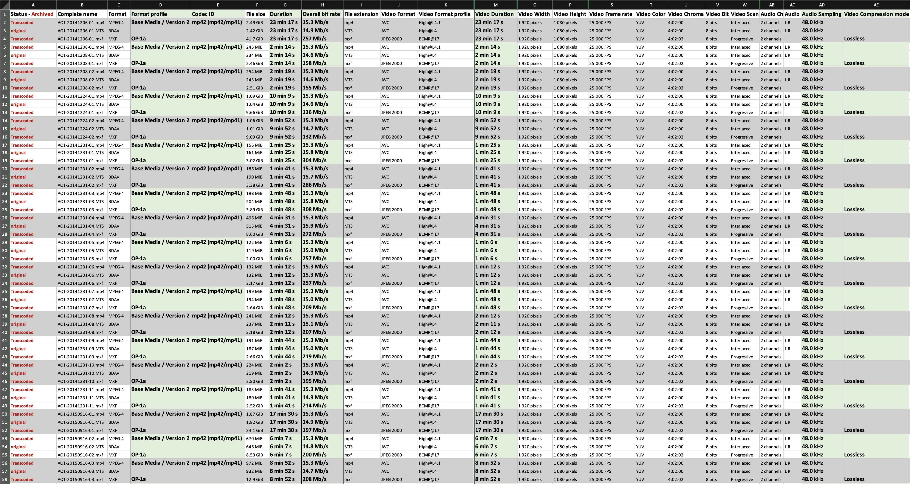

Table of contents
PARADISEC Workflow - The Australian National University
🚧 This page is currently under construction🚧

Last updated: 16 October 2023
This workflow is designed for use by PARADISEC staff at ANU. Some instructions may not apply to your unit. For questions or comments on this document please contact us at admin@paradisec.org.au, or write to us at:
PARADISEC
Sydney Conservatorium of Music, C41
University of Sydney, 2006
Ph: +61 2 9351 1279, Fax: +61 2 9351 1287
Audio workflow
Workflow for handling analogue open reel or cassette tapes
- Create inventory of items received
- Perform a cursory quality check; if mouldy, bag up separately to avoid cross-contamination set aside to transfer to Sydney unit
- Photograph each item, including all tape box inserts, tape labels, written inserts, etc.
- Repair or replace lead tape and damaged splices if necessary
- Fast forward and rewind to minimise print-through
- Follow the digitising instructions outlined here
Workflow for handling born-digital audio files
Reel-to-reel
- Create inventory of files received
Video workflow
Workflow for handling video tape formats, film, or other non-file-based video formats
- Create an inventory of items received
- Photograph each item, including all tape box inserts, tape labels, written inserts, etc. and add PARADISEC ID slips
- Confirm with PARADISEC admin that there is funding for out-sourcing the digitising task (though this really should be done prior to taking possession of physical items)
- Contact DAMSmart and arrange to get the items to them; provide them with a digital version of the item inventory and how files are to be named
Workflow for handling born-digital video files
- Create inventory of files received
- It is best to use MediaInfo batch export to collect necessary structural metadata such as overall/max Bitrate (needed for transcoding), duration (needed for QC), etc. (For more information about extracting metadata with MediaInfo, click here).
- If not possible to use MediaInfo batch export, then use MediaInfo app and manually collect necessary metadata.
- Minimally, create a list or csv of files (Terminal print dir using “ls” is fastest).

Photo: Spreadsheet containing structural metadata extracted from a set of videos using MediaInfo batch export, Windows version
- If you don’t already have a local backup of these files, create a folder of working copies.
- Working with the file copies, and using the metadata inventory as a guide, organise files by bitrate by putting them new separate folders with the bitrate in the folder name
- Use Handbrake, FFmpeg, or MediaEncoder to create .mp4 (H.264), if original files are not already compliant. Follow instructions for Handbrake here, FFmpeg here, or MediaEncoder here
- Use Abode MediaEncoder to create lossless JPEG2000 archival .MXF files. Follow instructions for Adobe ME here
- Using MediaInfo, create another metadata inventory of newly transcoded files. Add to previous spreadsheet and compare specifications to original (specifically duration, as a difference in duration may indicate dropped frames).
⬆️ Back to top

This work was created by Julia Colleen Miller and is licensed under a Creative Commons Attribution-NonCommercial-ShareAlike 4.0 International License.